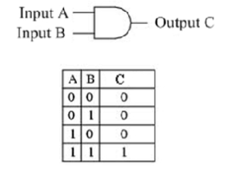

The rules of boolean algebra are different from those used in our conventional algebra. There are no negative numbers, fractions, square root, logarithm, squares etc. Arithmetic operations like addition, subtraction, multiplications etc. are not performed in boolean algebra.
Assume that there are two signals A and B. Also assume there to be a logical circuit which will accept these two signals and give an output which is also a logical signal as shown below. A and B is the input to the logical circuit and C is the output which depends on the inputs A and B. Now there are number of ways in which this output C can depend on A and B. Hence C is a logical function of A and B.
The AND gate is used to perform " AND " operation on two, three or any number of inputs. If A and B are the inputs and C is the output than the idea behind the AND gate is if A and B both are 1 (or TRUE ) then the output is 1 else 0. Boolean expression for AND gate is : C = AB. The symbol and truth table (Truth table consists of all the possible combinations of the inputs and the corresponding state of output of a logic gate) is show below:

 by
by